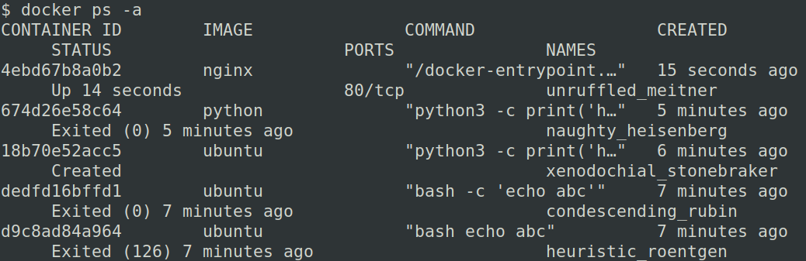

Делаем консольную программу удобной
https://asvetlov.github.io/python-week-2020/
Био
- 20+ лет с Python
- CPython Core developer
- asyncio
- со-автор aiohttp, yarl, multidict и т.д
Проблемы
или
Что может пойти не так?

Информативность
Размер шрифта и экрана
Scrolling & Pager
Светлый/тёмный цвет фона

Цвета и стили
- normal
- green
- red
- yellow
- blue
- cyan
- magenta
- bold
- dim (gray)
- underline
TERM=xterm-256colorCOLORTERM=truecolorENV VARS
как у взрослых ls
LSCOLORS=exfxcxdxbxegedabagacadLS_COLORS=no=00:di=01;34:ln=00;36:
*.jpg=01;35:*.mp3=00;32:*.tgz=00;31:
Смайлики
√×🤗→ □
Shell
- sh
- bash
- zsh
- fish
- cmd.exe
- powershell
TTY навсегда?
not sys.stdout.isatty()script.py | grep abcscript.py > out.txt- cron, HTTP сервер и т.д.
цвета, стили, размер экрана
Windows, любовь моя
less→ more\n→ \r\ndim / grayANSI(по умолчанию)◢◣◤◥→ -\|/
Инструменты
click
https://click.palletsprojects.com/
import click
click.secho(text, bold=True, fg="green")
styled_text = click.style(text, dim=True, fg="blue")
click.echo(styled_text)
click.unstyle(styled_text)
click.echo_via_pager(long_styled_text)
Python Prompt Toolkit
https://python-prompt-toolkit.readthedocs.io/
from prompt_toolkit.shortcuts import ProgressBar
from prompt_toolkit.formatted_text import HTML
import time
title = HTML('''Downloading <style bg="yellow" fg="black">
4 files...</style>''')
label = HTML('<ansired>some file</ansired>: ')
with ProgressBar(title=title) as pb:
for i in pb(range(800), label=label):
time.sleep(.01)

Big Russian Hammer
Widgets & Layouts
Всё пропало, шеф!
или "Где мой курсор?"
def main():
try:
...
finally:
# Soft Reset WITHOUT Clear Screen
sys.stdout.write("\x1b[!p")
sys.stdout.flush()
asyncio + click
@click.command()
def main():
with AsyncioRunner() as runner:
runner.run(async_func())
@async_command()
async def main():
await async_func()
asyncio + prompt_toolkit
from prompt_toolkit import PromptSession
from prompt_toolkit.patch_stdout import patch_stdout
async def async_func():
session = PromptSession()
while True:
with patch_stdout():
result = await session.prompt_async(
'Say something: '
)
print(f'You said: {result}')
Windows не отпускает
#include <windows.h>
HANDLE hConsole = GetStdHandle(STD_OUTPUT_HANDLE);
/* Enable ANSI mode */
if (!SetConsoleMode(
hConsole,
ENABLE_PROCESSED_INPUT |
ENABLE_VIRTUAL_TERMINAL_PROCESSING)) {
printf("Windows 10 is required\n");
}